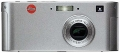

器材库 > 不可换镜头数码相机 > D-Lux

规格总览
发布日期
2003-04-01
停产
是
影像规格
影像传感器
CCD
影像传感器尺寸
1/2.5英寸
总像素
637万
有效像素
320万
静态图像尺寸
2048×1536, 640×480
静态图像格式
JPEG
画幅比
4:3
短片尺寸
320×240, 160×120
短片格式
Motion-JPEG
镜头和对焦
焦距
5.8mm-17.4mm
等效35mm画幅焦距
35mm-105mm
最大光圈
f/2.8-4.9
光学变焦
3倍
最近对焦距离
10cm
自动对焦系统
被动式TTL对比度自动对焦系统
对焦模式
AF
手动对焦
不支持
曝光控制
测光模式
中央重点测光, 评价测光, 点测光
场景模式
肖像, 近摄, 风景, 黄昏
快门速度
8 - 1/2000秒
曝光补偿
±2EV以1/3EV级调整
连拍
2 fps / 4 fps，最多8张
闪光灯
内置闪光灯
固定
闪光模式
自动, 慢速同步, 减轻/消除红眼, 填充式闪光, 关闭
取景规格
取景器
光学取景器
LCD尺寸
1.5英寸
LCD像素
11.4万
文件输入/输出
存储卡
SD/SDHC, MMC
数据接口
USB2.0
视频/音频接口
Video 输出 (NTSC/PAL)
电源
电池
可充电锂电池
外观
颜色
银色
尺寸
121×52×34mm
重量
180g
newportcoast2010-08-19 09:454.5 分
操作性 4.00功能性 4.00美观性 5.00趣味性 5.00耐用性 5.00性价比 3.50解像力 4.50色彩还原 5.00
产品图 / 样片
徕卡 D-Lux
评测 / 相关文章
该产品暂无存档的评测文章